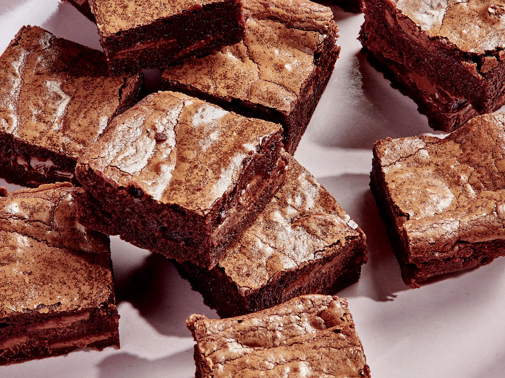

Brownie Crisp

Description
Crisp and intense, the best part of the brownie! You can add a multitude of toppings such as salt, caramel, chocolate chips (mini), nuts, sprinkles, etc. You may as well double the recipe because they disappear fast.
Servings
serves 10
Ingredients
- 1 cup white sugar
- ½ cup melted butter
- 1 teaspoon vanilla extract
- ½ teaspoon espresso powder (Optional)
- 2 egg whites, beaten
- ½ cup all-purpose flour
- ½ cup unsweetened cocoa powder
- ¼ teaspoon baking soda
- ⅛ teaspoon salt
Directions
- Preheat oven to 325 degrees F (165 degrees C). Line a baking sheet with parchment paper.
- Combine sugar, butter, vanilla extract, and espresso powder together in a bowl; beat in egg whites. Stir flour, cocoa powder, baking soda, and salt together in a bowl. Mix flour mixture into egg mixture until batter is combined. Spread batter as thin as a slice of American cheese onto the baking sheet.
- Bake in the preheated oven until batter is nearly cooked through, about 20 minutes. Remove from the oven; cut a shallow square pattern into the batter with a sharp knife. Place back into the oven; bake until batter is crisp, about 5 minutes.
- Cool in the pan for 5 minutes before transferring to a wire rack to cool completely; break into squares.